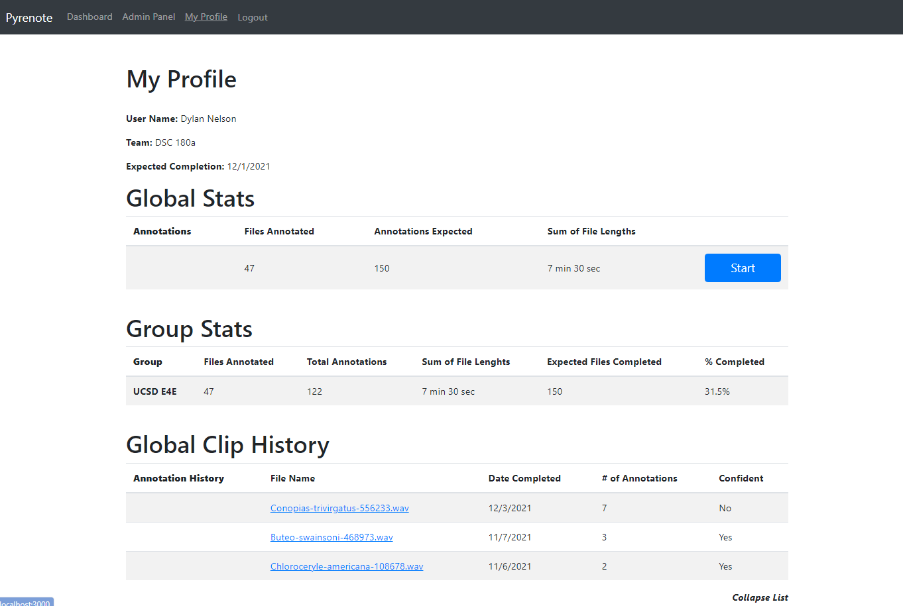
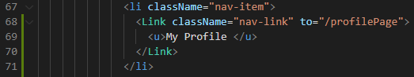
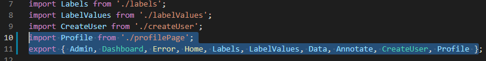
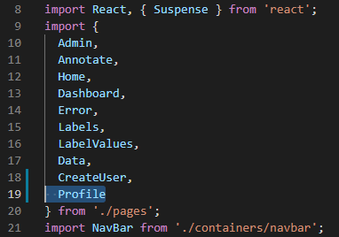
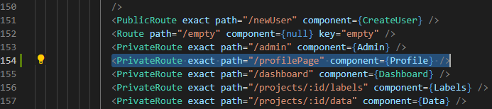

Pyrenote
Note: Some functionality like navbar and additional content and images are still being addedAbstract
Pyrenote is a project in development by a growing group of student researchers here at UCSD. It's primary purpose is to allow anyone to contribute to research by labeling data in an intuitive and accessible way. Right now it is currently being used to develop a sort of voice recognition for birds. The goal is to make an algorithm that can strongly label data (say where in the clip a bird is calling and what bird is making the call). To do this, a very vast dataset is needed to be labeled. I worked mostly on the user experience side. Allowing them to interact with their labeling in new ways, such as keeping tabs on their progress and reaching goals. Developing a User Profile page was the primary source for receiving this data and was developed iteratively as a whole new page for the site
Q1 Progress
- Learning about the project
- Purpose
- History
- Bird Domain Knowledge
- Using Pyrenote
- Developing Ideas
- Prototypes
Using Pyrenote
As a user of Pyrenote I came up with a few ideas and improvements I wanted to implement. One of the
main issues we faced was needing to ask our team leader, who was the only one who could access the
data of our project, for updates. Each time we did this he had to manually go through the data,
parse it, and deliver it to us (manually). This is something that can clearly be automated and
delivered directly to the user. In the end, my team and I decided to make a User Profile page.
Engaging users is key to the Pyrenote workflow, and we need users to be content, because without
good users, we don’t have data.. We set out to incorporate a user page with a few goals in mind:
- To allow users to track their progress on their own, in real time
- To allow users to access previously annotated clips, in case there was an error, incomplete labeling, or anything else.
- To allow managers to organize and access all this data better as well, without manual intervention
Developing Ideas
 Different sets of functionality needed
Different sets of functionality needed
This was the first set of users we identified and decided we needed to work for. There is different data for each and different ways to access the data so it will allow the development of each part to work fairly iteratively
Prototyping
 Prototype 1
Prototype 1 The first prototype I made and presented to the team. Developed in Figma and shared in our weekly meetings. I eventually got a lot of feedback that paved my direction for the following quarter. A lot more data was desired and organized in a different way
Demo Vid:Live Demo
Q2 Progress
Backend Learning
I met with with one of our lead programmers and designers for the site. Sean helped me throughout this entire quarter and taught me during each step of my journey. First we went over the old prototype and discussed the limitations of it with respect to the currently devloped code. Some things were going to be a lot harder to devlop than others. We knew we could devlop everything we had pictured, but only with enough time. So we set priorities and I made a new prototype
Prototype 2
 Prototype 2
Prototype 2
New Insights
- A whole new section to distinguish between groups
- Group Specific data for each clip
- A limit to how many clips are shown (not all/infinite)
- Rephrasing for some words and tables
New Frontend
 Frontend CompleteWorks pretty similar to the previous demo and looks similar to the new prototype some adjustments need to be made but that can be done easily. Now we just need to hook it up to the backend
New Backend
The backend was able to be incorporated partially with ease. After a few meetings
and much more learning. We were able to get some variables in that worked and delivered
exactly what we wanted. Most of the other functionality is still a work in progress
because it requires writing all new backend code, which I was not previously familiar
or experienced with. The tables are a whole level of complexity harder than everything
we've done so far, and certainly take time.
Sean taught me a lot and I got access to everything on the backend that I need. We
successfully got the page setup to accept data and API calls and tested a few and they work.
Everything else is diving into the massive data structures and coding them to search and display
correctly (which has been easier said than done)
What Now?
Honestly just trying to get things out. I'm learning a lot while trying to develop the backend code, but with that comes a lot of issues. I was overzealous with how much I I thought I could learn and do in these last few weeks of the quarter, but I'm proud of how far I've come and will continue working and see this project through. If you're actually reading this and made it this far, please let me know what you think. Thank you
Technical Work Dump
This chunk is not meant to be report-like and is meant to be useful for someone (potentially my future self) trying to understand the proccess for setting up some of the code.
1. Creating New Page
- Add a item to the navbar in audino/frontend/src/containers/navbar.js
- Add the new page as list element near the end of the Navbar script
- 
- NOTE: The directory (the “to = …”) of the file here matters, it must be the same as the JS file you will create
- Create a JS file with the same name in audino/frontend/src/pages. Mine will be titled “profilePage.js”
- In audino/frontend/src/pages/index.js, assign a name to the page in a new import line,
and then add that name to the list of exports
- 
- The first highlighted line was added entirely, and the second line “Profile” was simply added to the set
- Establish a private route to the new JS script in audino/frontend/src/app.js, allowing it to
be found by other files
- 
- Add “Profile” (or the name of the page) to the initial import of the same file
- 
- Add a private route as well. This should be in the render portion, near the end of the script
2. Creating Dynamic Stats
This is the first example I implemented of dynamic backend code working for the front end. I will explain it in a more general way so some logic can apply to other applications. The code is vast though so I recommend looking at the source code as well if your goal is to actually implement something like this.
- In audino/routes create a new file
- You can name it whatever you want, but for this example it will be user_metrics.py
-
-
-
-